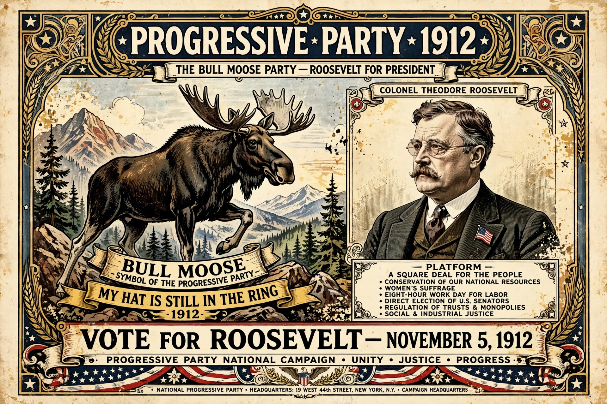

The Progressive Party, popularly nicknamed the "Bull Moose Party", was a third party in the United States formed in 1912 by former president Theodore Roosevelt after he lost the presidential nomination of the Republican Party to his former protégé turned rival, incumbent president William Howard Taft.
The party's platform, Roosevelt's "New Nationalism," called for tariff reform, regulation of trusts, women's suffrage, an eight-hour workday, social insurance, initiative, referendum and recall, and a federal income tax. With Hiram Johnson as running mate, Roosevelt won 27.4% of the popular vote and 88 electoral votes — the best third-party presidential showing in U.S. history — outpolling Taft but splitting the Republican vote and electing Democrat Woodrow Wilson. Roosevelt's nickname came from his remark that he felt "as strong as a bull moose" after being shot during the campaign in Milwaukee.
Progressives won some congressional and state races in 1912 and 1914, but Roosevelt declined the 1916 nomination and endorsed Republican Charles Evans Hughes; the party rapidly collapsed and formally dissolved by 1920.